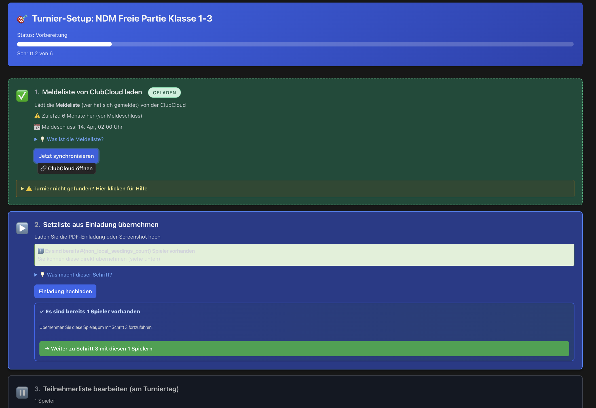
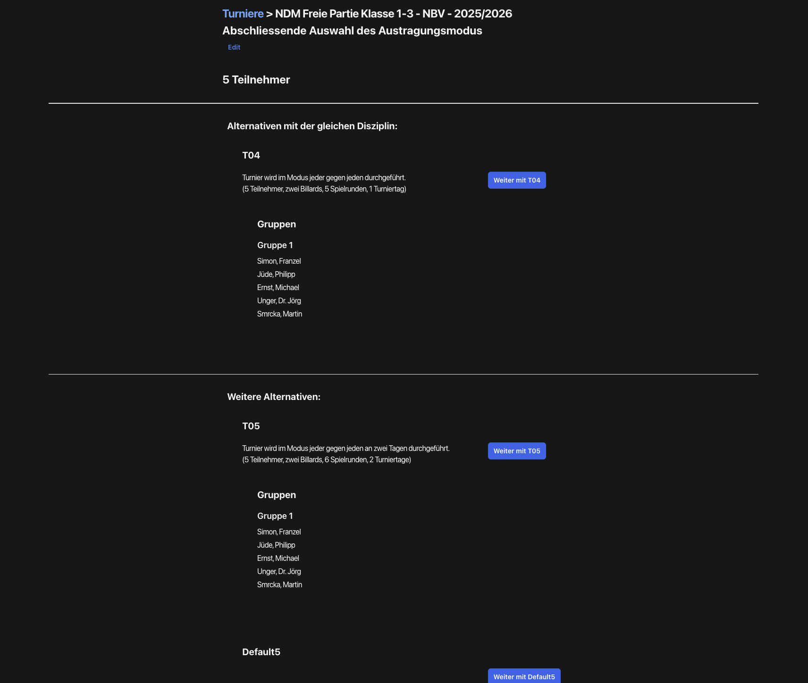
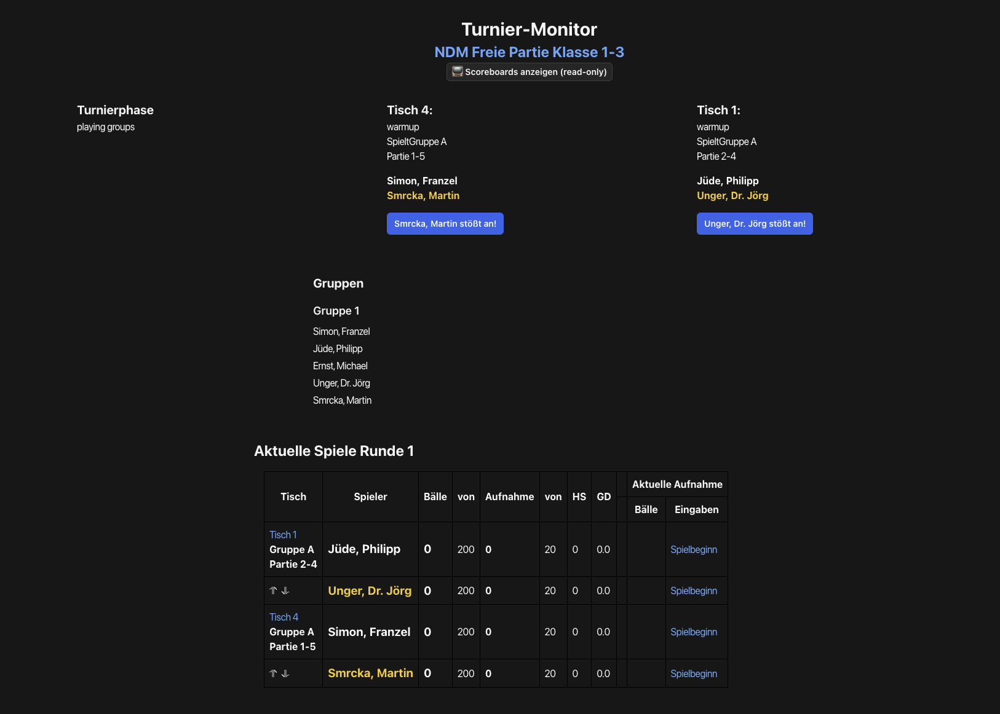

Tournament Management¶
This page walks you through running a carom tournament synced from ClubCloud, step by step, from the moment you receive the invitation to the final upload of results.
Scenario¶
For example: as the tournament director for your club you have received an NBV invitation for the NDM Freie Partie Class 1–3 by email as a PDF — a regional carom tournament running one Saturday in your club's playing location with 5 registered players across two tables. The PDF normally serves as your starting reference for managing the tournament. This page walks you through the run from the moment the invitation arrives to the moment the results reach ClubCloud.
For deviating special cases, dedicated flows live in the appendix:
- Invitation missing — flow without a PDF invitation
- Player missing — handling registered players who do not show up
- Late registration on tournament day — on-site player registration
Walkthrough¶
The following guide follows the actual flow of the Carambus wizard — as it works in practice. Where the interface uses unfamiliar labels or shows unexpected behaviour, you will find a coloured callout box explaining what to expect.
Step numbering is logical, not one-to-one with the UI
The steps numbered 1–14 below are a logical-chronological breakdown. The corresponding UI screens have grown historically and do not always map one-to-one: Steps 2–5 all live on the wizard page, Step 6 has its own mode-selection screen, Steps 7–8 are the same parametrisation page, and from Step 9 onwards the action moves into the Tournament Monitor and the table scoreboards. During match play (Steps 10–12) the tournament director normally has no active role — all actions happen at the scoreboards.
Step 1: Receive the NBV invitation¶
You receive a PDF invitation from the regional sports officer (LSW) by email for the NDM. The invitation contains the official tournament plan, the seeding list (Setzliste) — sorted by the regional sports officer from the registration list — and the start times. The invitation also lists the playing targets for the discipline: the target balls (a single value for normal tournaments, or an individual handicap value per player for handicap tournaments) and the inning limit. You enter these values into the start form in Step 7.
Three terms describe the same players at different points in time and in different orderings — keep them straight:
- Registration list (Meldeliste) — the unordered list of players that the club sports officer (CSW) has officially registered for the tournament in ClubCloud. It is the official entry basis and is available in ClubCloud until tournament start. There is no ordering at this level — the ordering only comes later via the regional sports officer's seeding list.
- Seeding list (Setzliste) — the version sorted by the regional sports officer (LSW) from the registration list. The LSW combines the registration list offline with his own player rankings and is free to make small re-orderings. The result — a sorted registration list — is shipped with the invitation to the club.
- Participant list (Teilnehmerliste) — the players who actually show up on tournament day. Reconciled against the seeding list with the present players just before the tournament starts. The ordering normally follows the LSW seeding list; if that is not available, the tournament director can edit it.
The glossary covers all three terms with their temporal relationship.
You do not need to click anything in the system yet — open the invitation, keep the PDF handy, and then open the tournament detail page in Carambus.
Step 2: Load tournament from ClubCloud (Wizard Step 1)¶
Navigating to the tournament page: From the Carambus main menu, open Organisations → Regional Federations → NBV and click the link "Current tournaments in season 2025/2026" (the season is dynamic). In the tournament list, pick the right tournament (in the example scenario "NDM Freie Partie Class 1–3").
On the tournament detail page you see the wizard progress bar "Tournament Setup" at the top. Step 1 "Load registration list from ClubCloud" is usually already completed automatically — a green tick (LOADED) indicates that Carambus has already synchronised the registration list.
Note — sync before the registration deadline: If the ClubCloud sync ran before the official close of registration, the registration list in Carambus may contain fewer players than the later invitation. In normal operation the invitation and the ClubCloud registration list match after the deadline, because both are snapshots at the same moment. If you suspect players are missing, check it before tournament start in Step 4 and re-trigger the sync after the close of registration. See also Players missing from the ClubCloud registration list in the troubleshooting section.

Figure: Tournament setup wizard after a successful ClubCloud sync — the typical default appearance when the sync completed in full (example from the Phase 33 audit, NDM Freie Partie Class 1–3). The 1-player edge case described in the warning callout is not illustrated here — it only occurs with an incomplete sync.Step 3: Take over or generate the seeding list¶
The seeding list is a result: registration list plus an order. The order is normally provided by the regional sports officer in the invitation (based on his spreadsheets that consolidate prior tournament results). It is not a source you "download" from somewhere.
The normal case (with invitation): You upload the invitation PDF in Wizard Step 2. Carambus reads the seeding list from the PDF. With one click you can convert the seeding list into a participant list. Occasionally the invitation interpretation (OCR) produces errors, so the resulting participant list does not match the seeding list from the invitation. You can correct this in Step 4.
Without an invitation: You start from the ClubCloud registration list (a snapshot at the close of registration) and then in Step 4 you click "Sort by ranking" to order it by the ranking maintained per player in Carambus — the full flow lives in the appendix Invitation missing.
If the PDF upload fails technically (common with certain print templates or when the internet connection is missing), see Invitation upload failed.
Step 4: Review and add participants (Wizard Step 3)¶
How do I get into the participant edit page? There are three possible entry points depending on the current wizard state:
- Directly from Step 3 — once you have taken over the seeding list in Step 3, the wizard forwards you automatically into the edit page
- Via the button at the bottom of the tournament page — even when Wizard Step 3 is not yet active, this bottom link gives you access
- Via the "Upload invitation" action — even without an invitation this entry point is usable: inside the invitation upload form there is a link "→ With registration list to Step 3 (sorted by ranking)"
This multi-path UX has grown historically — all three paths land on the same edit page.
In Wizard Step 3 "Edit participant list" you see the currently registered participants. If players are missing, enter their DBU numbers comma-separated in the "Add player by DBU number" field (example: 121308, 121291, 121341, 121332) and then click the "Add player" link to apply the entry.
Only when manually correcting the participant list: If no official seeding list from the invitation is available, or if you have added players manually, click "Sort by ranking" at the top to automatically order the participant list by the current ranking. Important: if a seeding list from the invitation exists, its order has priority — the regional sports officer's seeding list must not be overwritten without good reason.
When the number of participants matches a predefined tournament plan, a gold-highlighted panel "Possible tournament plans for N participants — automatically suggested: T04" appears below the participant list. With 5 participants, T04 is suggested (the plan codes such as T04 come from the official Carom Tournament Regulations). The final mode selection happens in Step 6.
Most changes — sorting and in-place edits of individual fields — are saved immediately. Exception: Adding a new player by DBU number requires a click on the "Add player" link to apply the entry.
Step 5: Close the participant list¶
Important conceptual note: The wizard's "Step 4" and "Step 5" labels are not separate wizard states but action links on the participant list page:
- "Step 4: Edit participant list" — link back to further editing
- "Step 5: Close participant list" — link that triggers the state transition into mode selection
There is no separate state between the two. The wizard progress bar therefore jumps straight to mode selection after closing — because "Step 4" was just an action link.
When the participant list is complete, click the "Close participant list" link. The seeding list is now committed and the tournament moves into the next wizard state ("Step 5: Choose tournament mode").
Closing the participant list — what is and isn't possible
Clicking Close participant list is normally binding: you move into mode selection and can no longer change the participant list through the normal wizard path. In an emergency, however, you can reset the entire tournament setup via the "Reset tournament monitor" link at the bottom of the tournament page — that is possible, but if the tournament is already running it destroys data (see Step 12 for details).
Step 6: Select tournament mode¶
Wizard Step 5 opens a separate page "Final selection of playing mode". You see one or more cards with the available tournament plans — the selection depends on the participant count and shows all plans that fit, including a dynamically generated Default{n} plan where {n} is the current participant count.
Default{n} is a dynamically generated round-robin plan; its required table count is computed from the participant count. The T-plans (T04, T05, …) by contrast have fixed match structures and table counts taken from the official Carom Tournament Regulations.
With 5 participants, the suggestion is for example T04 (the standard for 5 players in the regulations). The plan specified in the invitation is normally the binding one set by the regional sports officer — accept that suggestion.
Click "Continue with T04" (or the suggested plan). The selection is applied immediately and without a confirmation dialog. If you accidentally chose the wrong plan, see Wrong mode selected.

Figure: Mode selection showing the three tournament plans with automatic T04 suggestion for 5 participants (example from the Phase 33 audit).Step 7: Start parameters and table assignment¶
Steps 7 and 8 live on the same page
After mode selection, one parametrisation page opens that contains both the start parameters and the table assignment. The doc separates them into two steps for didactic reasons — in the UI they are one page.
At the top you see a summary of the selected mode, then the "Table assignment" section, and a form "Tournament parameters" with the playing rules.
English field labels in the start form
Some parameters in the start form are currently labelled in English or described unclearly (for example Tournament manager checks results before acceptance or Assign games as tables become available). The glossary below explains the most important terms. When in doubt, accept the defaults and verify the settings before starting the tournament.
The essential parameters you need to know:
- Table assignment (see the section further down in this step) — which physical tables in your venue map to the logical tables of the tournament plan
- Target balls (
balls_goal): The number of points (caroms) a player must score to win a match. For NDM Freie Partie Class 1–3 the value comes from the invitation (typically 150 balls, optionally reduced by 20 %). The Carom Sport Regulations are authoritative. - Inning limit (
innings_goal): Maximum number of innings per match. For Freie Partie Class 1–3 typically 50 innings (optionally reduced by 20 %). Empty field or 0 = unlimited (the UI does not document this clearly — please read it here). - Match closure by the manager or by the players — who confirms the result at the scoreboard after a match ends
auto_upload_to_cc(checkbox "Upload results automatically to ClubCloud") — if enabled, every individual result is uploaded to ClubCloud immediately after the match ends. See the appendix ClubCloud upload — two paths for prerequisites and alternatives.- Timeout control — referee timer per inning (discipline-dependent)
- Nachstoß — rule variant in certain carom disciplines (if the player who reaches the target was not the opener, the opponent gets one final inning to equalise)
Some parameters only appear for certain disciplines — for example the Nachstoß checkbox only shows when the chosen discipline uses that rule.
Note on "Bälle vor": The UI label "Bälle vor" sometimes appears next to target balls — that is an individual handicap value used in handicap tournaments (each player gets a different value), not to be confused with the general target-balls parameter.
Table assignment (sub-section of Step 7)¶
The chosen tournament plan defines logical table names (for example "Table 1" and "Table 2" for T04). In this sub-section you assign each logical table a physical table from your venue. Pick the two physical tables from the dropdown. For our NDM scenario, choose for example "BCW Table 1" and "BCW Table 2".
The assignment of individual matches to logical tables happens automatically from the tournament plan — the tournament director only has to set up the logical-to-physical table mapping.
Scoreboard binding: After the tournament starts, one or more scoreboards (table monitors, smartphones, web clients) are connected to each physical table. The scoreboard operator picks the matching physical table on the scoreboard. The logical-to-physical binding cannot be changed afterwards — it is set here in Step 7. The scoreboard-to-physical binding, however, is flexible: if for example the scoreboard at physical table 5 fails, you can pick physical table 5 on a free scoreboard at a neighbouring table — that scoreboard then serves the failed table as well. Technically the routing happens through the TableMonitor of the logical table.
Step 9: Start the tournament¶
When the table assignment and tournament parameters are complete, click "Starte den Turnier Monitor" at the bottom of the page.
The start takes a few seconds
After clicking Start tournament monitor the page may look unchanged for a few seconds. That is normal — the wizard is preparing the table monitors in the background. The button is disabled during the operation, so an accidental double-click does nothing. After a few seconds the Tournament Monitor opens automatically.
Did the start succeed? The most reliable check is to look at the table scoreboards: if they show the correct round-1 pairings, the start was successful.
If the scoreboards show nothing yet: The scoreboards may not have been switched on until after the tournament started, or they may still be in the generic welcome mode. In both cases you can navigate at the scoreboard via "Tournaments" to the list of running tournaments — pick the right tournament and then the corresponding table to display the pairings.
Step 10: Warmup, lag-shot and match phase¶
After the Tournament Monitor opens, you see the overview page "Tournament Monitor · NDM Freie Partie Class 1–3". Each of the two tables shows a status badge "warmup" and the assigned player pairs for match 1 (for example "Simon, Franzel / Smrcka, Martin" on Table 1).
A match goes through three phases at the scoreboard — warmup → lag shot → match phase:
- Warmup: The players break in the table (German: einspielen — the technical term for "try out the table and balls before they count"). The warmup time is started at the scoreboard and is typically 5 minutes (parameter Warmup). Points do not count yet.
- Lag shot (Ausstoßphase): Before the actual match phase begins, the scoreboard determines who gets the opening break. The lag-shot result is entered at the scoreboard, and the player display (white/yellow) is swapped accordingly.
- Match phase: Only after that does the actual match start — points are counted.
In the Tournament Monitor, the section "Current matches Round 1" shows the matches of the current round with columns Table / Group / Match / Players. With 5 participants in Round 1 there are 2 matches with 2 players each; the fifth player is sit-out in this round (see Bye for the precise terminology). Not 4 matches — the count is determined by the tournament plan.
Note: Each row in this table also has buttons such as "Start match" — that is fallback UI for the emergency case (scoreboard failure with manual transcription from paper protocols). In the standard flow the tournament director does not need to click these buttons.
As the tournament director you have nothing to do here actively — observe whether all scoreboards are connected (green status) and wait for the players to start the matches at their scoreboards.

Figure: Tournament Monitor right after start — both tables show "warmup" status and the pairings for Round 1 (example from the Phase 33 audit).Step 11: Match play (the scoreboards drive everything)¶
In the standard flow the tournament director has no active role here. Once warmup and the lag-shot phase end at a scoreboard, the match phase starts automatically — the match start is triggered at the scoreboard, not in the Tournament Monitor.
Steps 10, 11 and 12 are in truth three phases (warmup/lag-shot → match play → finalisation), not three "tournament-director actions". During these phases everything happens at the scoreboards. Your only job is observation and intervention if something goes wrong — see Step 12.
Special case: manual round-change control: If you enabled the parameter "Tournament manager checks results before acceptance" in the start form, the round change will be blocked until you click "OK?" at every match end. This option is now disputed and is likely to be removed; in the standard case, leave it disabled.
Step 12: Observe and intervene as needed¶
During match play the players enter points directly at the scoreboard. The Tournament Monitor updates in real time — you do not need to reload the page.
What you see in the overview: the columns Balls / Innings / HS (high run) / GD (general average) in the matches table.
At match end — the protocol editor: Since the introduction of the protocol editor the match-end flow has changed. When a match ends the protocol editor opens automatically at the scoreboard. There the players can still make changes to the match protocol (for example record a forgotten Nachstoß, correct a wrongly entered inning). Only after closing the protocol editor is the result finalised and pushed to the Tournament Monitor. The table card then automatically advances to the next match in the round; after all matches in a round are finished the monitor advances to the next round.
Browser-tab oversight: From the Tournament Monitor you can open the individual table scoreboards in their own browser tabs (click the corresponding table link). This is the usual way to keep an eye on multiple tables at once and intervene when needed.
Common error sources during match play:
- Nachstoß forgotten at the scoreboard — in carom disciplines with the Nachstoß rule this is a recurring source of wrong final scores. If you observe it, address the players directly before they confirm the protocol — see Nachstoß forgotten at the scoreboard.
Reset destroys all data while a tournament is running
The link "Reset tournament monitor" at the bottom of the tournament page is always available — even while the tournament is running. While the tournament is running the reset destroys all results recorded so far. A safety dialog is currently not in place (planned for a follow-up phase). Use the reset during match play only if you really intend to abort the tournament.
Special case manual control: If you enabled "Tournament manager checks results before acceptance" in the start form, a confirmation button appears for you after each match. This button is part of the special operating mode from Step 11 and is likely to be removed.
Step 13: Conclude the tournament¶
After all rounds are finished the Tournament Monitor moves the tournament into the finalisation status.
Final ranking is NOT calculated automatically
Carambus correctly returns the individual match results, but the calculation of the final tournament ranking (positions, tie-breakers, discipline-specific rules) currently happens manually in ClubCloud. The manual maintenance workflow is documented in the appendix Maintaining the final ranking in ClubCloud. Automatic calculation in Carambus is planned as a follow-up feature for v7.1+.
Shootout / playoff — critical bug in knock-out tournaments
Playoff matches in knock-out tournaments are not supported in the current Carambus version — and this is not just a missing feature, it is a critical bug: in knock-out play there must be no draw. When two players tie at the end of regular play, Carambus currently auto- advances the player who opened the match (the one who had the opening break). That is not the correct shootout rule and can falsify the tournament result.
Workaround until the fix: if a shootout is needed, run it outside Carambus (record the result on paper at the table) and enter the result manually in ClubCloud. Correct the automatic "opener wins" Carambus has pushed through accordingly. Real shootout support is planned as a critical feature for a later milestone (v7.1 or v7.2).
Step 14: Transfer results to ClubCloud¶
If the option "auto_upload_to_cc" was enabled in the start form (Step 7), Carambus uploads each individual result immediately when the corresponding match ends — not at finalisation time. Prerequisite: the participant list must already be finalised in ClubCloud. The full explanation of both upload paths and their prerequisites is in the appendix ClubCloud upload — two paths.
If automatic upload was not enabled or the prerequisites are missing, the upload runs through the CSV batch path: at the end Carambus produces a CSV file with all results, which must be imported manually into the (finalised) ClubCloud participant list. The appendix CSV upload in ClubCloud describes the path in detail.
An "Upload to ClubCloud"-button, as mentioned in earlier doc versions, does not exist in the current Carambus UI. Manual upload happens exclusively via the ClubCloud admin interface.
Glossary¶
Karambol terms¶
-
Straight Rail (Freie Partie) — The simplest carom discipline: one point per legal carom (the cue ball must contact both object balls), with no zone restrictions. Target balls for NDM classes typically range from 50 to 150 depending on class. You configure this value in the start form, Step 7.
-
Balkline / Cadre (35/2, 47/1, 47/2, 71/2) — Carom disciplines with zone restrictions drawn on the table cloth (cadre = French for "frame"). The first number is the zone size in centimetres, the second is the maximum number of consecutive points allowed within a zone. Cadre tournaments use the same wizard steps as Straight Rail but with different standard target-ball values.
-
Three-Cushion (Dreiband) — Carom discipline in which the cue ball must contact at least three cushions before touching the second object ball. No zone restrictions. You see the discipline name on the tournament detail page.
-
One-Cushion (Einband) — Carom discipline in which the cue ball must contact at least one cushion before hitting the second object ball.
-
Opening break / opener (Anstoß / Anstoßender) — The opening break at the start of a match is taken only by the opener in their first inning — who that is gets decided in the lag-shot phase at the scoreboard. Through the rest of the match the players take turns until the target balls or the inning limit is reached.
-
Inning (Aufnahme) — One inning is one turn at the table: the player continues shooting until they fail to score or reach the target balls. The inning limit sets the maximum number of innings per match. You see this term in the start form, Step 7.
-
Target balls (Ballziel,
balls_goal) — The number of points (caroms) a player must score to win a match. The database field is calledballs_goal. For Freie Partie Class 1–3, typically 150 balls (optionally reduced by 20 %). The Carom Sport Regulations are authoritative. You configure this value in the start form, Step 7. -
Inning limit (Aufnahmebegrenzung,
innings_goal) — Maximum number of innings per match. The database field isinnings_goal. For Freie Partie Class 1–3, typically 50 innings (optionally reduced by 20 %). Empty field or 0 = unlimited. You configure this value in the start form, Step 7. -
"Bälle vor" (handicap value) — An individual handicap value per player used in handicap tournaments. Not to be confused with the general target-balls parameter — in handicap tournaments each player gets a different value.
-
High run / HS (Höchstserie) — The longest consecutive scoring run in a single match or across the whole tournament. Displayed in real time in the Tournament Monitor, Step 12.
-
General average / GD (Generaldurchschnitt) — Points scored divided by the number of innings played. A key measure of playing strength across a tournament. Displayed in the Tournament Monitor, Step 12.
-
Playing round (Spielrunde) — One complete round of the tournament in which each player (or pair) competes once. A T04 plan has 5 playing rounds. After each round the Tournament Monitor automatically updates the standings table.
-
Table warmup (Tisch-Warmup) — The phase after starting the tournament in which tables carry
warmupstatus and players can break in the table without points counting. Warmup time is started at the scoreboard; after that the table automatically moves into match play.
Wizard terms¶
-
Registration list (Meldeliste) — The unordered list of players that the club sports officer (CSW) has officially registered for the tournament in ClubCloud. It is the official entry basis and is available in ClubCloud until tournament start. There is no ordering at this level — the ordering only comes later through the LSW seeding list. Cross-reference the term hierarchy in Step 1.
-
Seeding list (Setzliste) — The version sorted by the regional sports officer (LSW) from the registration list. The LSW combines the registration list offline with his own player rankings and is free to make small re-orderings. The result — a sorted registration list — is shipped with the invitation to the club. Three possible sources:
- Official seeding list from the invitation (the normal case) — produced by the regional sports officer from registration list + own rankings
- Carambus-internal seeding list (the fallback case without invitation) — derived from the Carambus-internal rankings via "Sort by ranking" in Step 4
- Not directly from ClubCloud — ClubCloud only carries the unordered registration list, not seeding lists
-
Participant list (Teilnehmerliste) — Who actually shows up on tournament day. Reconciled against the seeding list with the present players just before the tournament starts. The ordering normally follows the LSW seeding list; if that is not available, the tournament director can edit it. Finalisation happens in Step 5.
-
Tournament mode (Turniermodus) — The playing format of the tournament (for example round-robin, knockout). Selected in Step 6. The mode determines the underlying tournament plan (T04, T05,
Default{n}) and thus the number of rounds and days. -
Tournament-plan codes (T-plan vs. Default plan) — Carambus knows two kinds of tournament plans:
- T-nn (for example T04, T05) — predefined plans from the Carom Tournament Regulations with fixed match structure and fixed table count. Useful for standard player counts in round-robin format.
Default{n}— a dynamically generated round-robin plan where{n}is the participant count. Created automatically when no T-plan fits; the required table count is computed from the participant count.
You select the plan in Step 6.
- Scoreboard — The touch-enabled input device at each table (table monitor, smartphone, or web client) used by players to enter points live during a match. The logical-to-physical binding is set in Step 7 and cannot be changed afterwards. The scoreboard-to-physical binding, by contrast, is flexible: at the scoreboard the operator picks the matching physical table, and the binding is established via the TableMonitor of the corresponding logical table. So if a table monitor fails, a free scoreboard at a neighbouring table can take over the failed table.
System terms¶
-
ClubCloud — The regional registration platform of the DBU (Deutscher Billard-Union / German Billiards Union). ClubCloud is the authoritative source for player registrations and entry lists. Carambus synchronises the participant list from ClubCloud in Step 2. See the ClubCloud Integration guide for further details.
-
AASM status (AASM-Status) — The internal state of the tournament managed by the AASM state machine (Acts As State Machine). Possible states include
new_tournament,tournament_seeding_finished,tournament_started_waiting_for_monitors,tournament_started, and others. Important: the wizard step display does not map one-to-one to AASM states — for example, Steps 4 and 5 are action links on a single state's page, not separate states (see Step 5). A more prominent status badge in the wizard is an open improvement area. -
DBU number (DBU-Nummer) — The national player ID issued by the Deutscher Billard-Union. Every licensed player has a unique DBU number. In Step 4 you can add players who are not in the ClubCloud registration list by entering their DBU number (comma-separated) in the input field.
-
Ranking (Rangliste) — A Carambus-internal player ranking that is updated per player from Carambus's own tournament results (so it is not sourced from ClubCloud). It serves as the default sort criterion when no official seeding list from an invitation is available. In Step 4 you can use "Sort by ranking" to automatically order the participant list by ranking position.
-
Logical table (Logischer Tisch) — A TournamentPlan-internal table identity (for example "Table 1", "Table 2" within T04). Logical tables are mapped to physical tables when the tournament starts in Step 7. The TournamentPlan references only logical table names — individual matches are automatically assigned to logical tables.
-
Physical table (Physikalischer Tisch) — A specific, numbered playing table in the venue (for example "BCW Table 1"). From the players' perspective only physical tables exist — the numbers are on the tables and the who-plays-where information is on the scoreboards and table monitors. When the tournament starts, each logical table is mapped to a physical one (see Step 7, Table assignment).
-
TableMonitor — A technical record / "automaton" that drives the activity at a logical table during a match: match assignments, score capture, round changes. From the players' perspective: a bot that decides which match runs at which table. Each logical table has one TableMonitor; all scoreboards that connect to the corresponding physical table receive match updates via this TableMonitor.
-
Tournament Monitor (Turnier-Monitor) — The top-level component that coordinates all TableMonitors of a tournament. The Tournament Monitor is both the technical coordinator and the overview page that the tournament director opens from Step 9 onwards.
-
Training mode (Trainingsmodus) — A scoreboard operating mode outside any tournament context, for running individual matches (training, friendly games). Also used as a fallback when a running tournament can no longer be continued in Carambus (see Tournament already started).
-
Bye / sit-out (Freilos / spielfrei) — Two related but not identical concepts:
- Sit-out for a round — When the participant count is odd (for example 5 players, 2 tables), one player cannot play in a given round — they are sit-out for that round. The assignment is automatic, derived from the tournament plan.
- Bye in the strict sense — When in a scheduled match pairing no opponent exists (for example because the opposing player did not show up or withdrew), the remaining player gets a bye — they win the match without playing. Note: a mid-tournament match abort (for example when a player drops out during the tournament) is not properly supported in the current Carambus version — see follow-up phase v7.1+.
Troubleshooting¶
Invitation upload failed¶
Problem: The upload dialog shows an error, spins indefinitely, or the PDF is uploaded but the seeding list remains empty.
Possible causes:
- No internet connection — Carambus generally runs offline, but the PDF upload to the server briefly needs network. If the upload dialog spins indefinitely, check the client's network connection first.
- Deviating template — The Carambus PDF parser expects the standard template the regional sports officer uses. If the template deviates (scanned PDF without machine-readable text, low resolution, unusual page format), the parser cannot extract the seeding list. In normal operation the PDF upload is reliable because the standard template is reused.
Fix: For internet issues, wait a moment and retry. If the template is the issue, switch to the ClubCloud registration list as a backup source. It is not less reliable than the PDF upload — it is a perfectly equivalent alternative for the special case where the PDF parser fails. The full flow is in the appendix Invitation missing, which describes seeding-list generation from Carambus rankings.
Players missing from the ClubCloud registration list¶
Problem: After the ClubCloud sync, fewer players were loaded than expected. The wizard shows a green "Continue to Step 3 with these N players" button even though N is too low.
Cause: In normal operation this should not happen — the invitation and the ClubCloud registration list represent the same close-of-registration snapshot. Three realistic triggers:
- The sync ran before the close of registration — Carambus took the ClubCloud data too early and does not yet know about late registrations. Fix: re-trigger the sync after the registration deadline.
- A player is registered late on tournament day — see Late registration on tournament day.
- The player was never registered at all — they correctly do not appear and that is not a Carambus bug.
Fix: First clarify which of the three cases applies. If a real player is missing, add them in Step 4 by DBU number.
Wrong mode selected¶
Problem: In Step 6 you clicked one of the mode cards (for example T04, T05, or Default{n}) and the wrong plan is now active. The start form has already opened.
Cause: Mode selection is applied immediately on click — there is no confirmation dialog (F-13).
Fix: As long as the tournament has not yet been started (Step 9 has not yet run), use the "Reset tournament monitor" link at the bottom of the tournament page to reset the setup and then go back through the wizard up to the mode selection again. A separate button that would switch the tournament mode afterwards does not exist in the current Carambus UI.
Reset is dangerous if the tournament is already running
If the tournament has already been started (tournament_started), the
reset destroys all results recorded so far. Use the reset link in this
state only if you really intend to abort the tournament. See
Tournament already started for alternatives.
Tournament already started — and something is going wrong¶
Problem: You need to change participants, the tournament mode, or start parameters, or a serious problem has occurred during the running tournament. The wizard already shows the Tournament Monitor and the detail page shows "Tournament running".
Cause: The AASM event start_tournament! (triggered in Step 9) moves the tournament into a state where the parameters can no longer be changed retroactively. This is a deliberate design decision to ensure data consistency with running scoreboards, not a bug.
Reality: There is no technical recovery path — not even for a database admin or developer. The data structures involved are too complex to safely modify mid-run.
Emergency fix:
- Undo for individual matches is possible — directly at the affected scoreboard.
- Resetting the entire tournament is possible, but destroys all results recorded so far (see Step 12 reset warning).
- If neither option is acceptable: Switch to the traditional method: record matches on paper, enter results directly into ClubCloud. You can keep using the scoreboards in training mode for the individual matches (no tournament context, but working point capture).
A safety dialog before reset while a tournament is running, and a parameter verification dialog before start, are planned as follow-up features for a later phase — they reduce the risk of this emergency happening at all.
Final ranking missing after the tournament ends (in ClubCloud)¶
Problem: The tournament is finished, but no final ranking with positions appears in ClubCloud.
Clarification: Carambus does compute the tournament final ranking automatically and displays it in the Tournament Monitor (overview page: positions, balls, innings, HS, GD per player) — it is also accessible at the scoreboard via "Tournaments → pick the tournament → Results". If the calculated ranking is not visible in the Tournament Monitor, that is a real bug (fatal — please report it to the developers immediately).
Actual problem: What is missing is the transfer of the Carambus ranking into ClubCloud. Carambus produces the calculated table, but:
- There is currently no automatic upload of the final ranking into ClubCloud (only the individual results are pushed via
auto_upload_to_cc). - Whether Carambus produces a CSV of the final ranking still needs to be verified — possible bug, TODO.
- ClubCloud only offers a manual edit form for the ranking, no upload endpoint.
Fix: The final ranking currently has to be maintained manually in ClubCloud. The workflow is in the appendix Maintaining the final ranking in ClubCloud. Read the values for the manual entry directly from the Carambus Tournament Monitor (or from the scoreboard results view).
Follow-up feature (TODO): A programmatic transfer of the final ranking to ClubCloud — by emulating the CC edit form — is planned as a follow-up feature for v7.1+.
CSV upload to ClubCloud does not work¶
Problem: At the end of the tournament you have a CSV file with the results, but ClubCloud does not accept it or returns validation errors.
Cause: The CSV upload requires the participant list in ClubCloud to be finalised — if a player who appears in the CSV is missing in ClubCloud, the import fails. Finalising the participant list via the CC API is currently not implemented in Carambus; it has to happen manually through a club sports officer in the ClubCloud admin interface.
Fix: The full flow including the required permissions is in the appendix CSV upload in ClubCloud. When in doubt, ask your club sports officer to finalise the participant list in ClubCloud first.
A player withdraws during the tournament¶
Problem: A player cannot continue during the tournament (illness, emergency, withdrawal).
Cause: Carambus does not support a clean mid-tournament match abort / player withdrawal in the current version. The function must still be implemented — it is planned as a medium-sized follow-up feature for v7.1+.
Fix (workaround): Close the affected player's current match at the scoreboard with the last recorded score. For the following rounds, treat the dropped player as a de-facto bye — opponents are credited with the match outside Carambus if needed. Document the process manually in the tournament protocol and in ClubCloud.
English field labels in the start form¶
Problem: Some parameters in the start form (Step 7) appear with English or unclear labels (for example Tournament manager checks results before acceptance, Assign games as tables become available).
Cause: Missing or broken entries in the i18n files (config/locales/de.yml). The fix is planned as a UI feature for a follow-up phase.
Fix (until the i18n correction ships): Use the following translation table:
| English label | German meaning |
|---|---|
| Tournament manager checks results before acceptance | Manager confirms results before acceptance (manual round-change control) |
| Assign games as tables become available | Assign matches as tables become free |
| auto_upload_to_cc | Upload results to ClubCloud automatically |
When in doubt, keep the defaults and verify the values before clicking "Start tournament monitor".
Nachstoß forgotten at the scoreboard¶
Problem: In a carom discipline with the Nachstoß rule, the regular inning has ended but the Nachstoß has not been entered yet.
Cause: Operator error at the scoreboard — Nachstoß entry is frequently forgotten or noticed too late in practice.
Fix: The player simply has to enter the Nachstoß to close the match correctly. Only after that does the protocol editor open for confirmation. Important: as long as the Nachstoß has not been entered, the match stays open — and that blocks the entire tournament flow (no round change, no follow-up match on this table). At the first sign address the players directly so they enter the Nachstoß before the protocol gets confirmed. Once the protocol is confirmed there is no clean correction path — a retroactive fix would have to be documented outside Carambus and entered into ClubCloud.
Playoff / shootout match needed (knock-out tournament)¶
Problem: In a knock-out tournament a match ends in a draw and a playoff would be required.
Cause (critical bug): Playoff / shootout is not supported at all in the current Carambus version — and this is not just a missing feature, it is a critical bug in knock-out tournaments: on a tie Carambus auto-advances the opener (the player who took the opening break) instead of triggering a playoff. That falsifies the tournament result. Real shootout support is planned as a critical feature for a later milestone (v7.1 or v7.2).
Fix (workaround): Run the playoff outside Carambus — record it on paper at the table — and enter the final result manually in ClubCloud. Correct the automatic "opener wins" Carambus has pushed through accordingly. The Carambus state for these cases has to be maintained outside the system.
Appendix: special cases and deeper-dive flows¶
The following sections describe complete alternative flows and topics that do not fit the linear walkthrough. They are linked to from the corresponding steps and troubleshooting recipes.
Invitation missing — generating a seeding list without a PDF¶
When: When you have exceptionally not received an official NBV invitation PDF (for example internet problems while receiving or uploading the PDF, a spontaneous club tournament, an internal cup, or a forgotten invitation from the sports officer).
Procedure:
- Open Carambus and create the tournament or sync it from ClubCloud as described in Step 2 — the ClubCloud sync runs even without a PDF, as long as the tournament exists in ClubCloud.
- In Step 3 (seeding list) skip the PDF upload path. Instead, take over the initial participant list directly from the ClubCloud registration list — via the link "→ With registration list to Step 3 (sorted by ranking)" inside the upload-invitation form (see Step 4 navigation, entry point 3).
- In Step 4 (participant list) click "Sort by ranking" to order players by the rankings maintained inside Carambus. This order replaces the missing official seeding list.
- Manually re-sort if the sports officer asked for a deviation (for example the title-defending player at position 1).
- Close as in Step 5 — the wizard then continues normally.
Note: this seeding list is Carambus-internal and not official. For NBV-relevant tournaments you should have the seeding list confirmed afterwards by the responsible sports officer.
A registered player does not show up¶
When: A player listed on the registration list does not appear on tournament day.
Procedure:
- Before the tournament starts (before Step 5 "Close participant list"): on the participant-list edit page (Step 4), the "Participant" column has a checkbox for every row. Uncheck the missing player — that removes the row from the participant list. Then check whether the remaining player count still fits the chosen tournament plan. If a different plan is needed, Carambus shows a new suggestion on the wizard page.
- If the participant list is already closed but the tournament is not yet started: you can reset the setup via "Reset tournament monitor" and rebuild the participant list. Note: before Step 9 the reset is risk-free, after that it is not — see Step 12 reset warning.
- If the tournament is already started and the player is in a round that has not yet been played, there is no clean path in the current Carambus version — this still has to be implemented. Treat the dropped player de facto as a bye (in the sense of "sit-out for this round") until then — see Player withdraws during the tournament.
Prevention: Confirm the presence of all players just before Step 5, not after the tournament starts.
Late registration on tournament day¶
When: A player who is not on the ClubCloud registration list wants to play on tournament day.
Procedure:
- First clarify eligibility: Does the player have a valid DBU licence? Does the tournament regulation allow on-site late registrations? Has the sports officer agreed? When in doubt: call the regional sports officer.
- Before tournament start late registration is easy in Carambus: in Step 4 enter the late player's DBU number in the "Add player by DBU number" field and click "Add player". Then "Sort by ranking" or drag-and-drop into the right place.
- Entry in ClubCloud: For the late registration to appear in the official statistics and for the result upload to work, the player must also be added to the ClubCloud registration AND participant list. This requires a club sports officer with the appropriate permissions (see Appendix ClubCloud upload). If the sports officer is not on site, you have to call them or have the late registration recorded later.
- After tournament start late registration is currently not properly supported in Carambus — the only workaround is resetting the tournament monitor with all consequences.
ClubCloud upload — two paths¶
Note: This appendix is a first-pass version based on the SME information already captured. A complete version (including screenshots of the CC admin interface, exact menu paths, and a full list of typical validation errors) is planned as PREP-04 in Phase 36c and will be added here later.
Carambus knows two ways to push tournament results back to ClubCloud — both have the same prerequisite but different workflows.
Common prerequisite: The participant list in ClubCloud must be finalised. That means: every player who participates in the tournament (including late registrations) must be in the CC participant list before any result can be uploaded. Finalising the participant list via the CC API is currently not implemented in Carambus — it has to be done manually by a club sports officer in the ClubCloud admin interface. This permission is typically restricted to selected officers, not every club member.
Path 1: Per-match upload (auto_upload_to_cc enabled)
- Every individual result is uploaded to ClubCloud immediately when the match ends.
- Technically this happens through form emulation in the ClubCloud admin interface.
- Prerequisite: as above — the CC participant list must already be finalised before the first match ends.
- Advantage: results are visible in ClubCloud in near real time (for example for live federation reports).
- Activate: in the start form (Step 7) tick the checkbox "Upload results to ClubCloud automatically" (
auto_upload_to_cc).
Path 2: CSV batch upload at the end (auto_upload_to_cc disabled or path 1 not possible)
- All results are recorded only locally in Carambus during the tournament.
- At the end of the tournament Carambus produces a CSV file with all match results.
- The CSV is sent by email to the tournament director (or made available for download).
- The tournament director forwards it to the club sports officer who imports it into the (now finalised) ClubCloud participant list — for the detailed procedure see CSV upload in ClubCloud.
- Advantage over path 1: the sports officer can finalise the CC participant list after the tournament — path 2 is robust against the permission gap.
Best practice — getting Path 1 to run smoothly: The easiest way to get path 1 (automatic per-match upload) running reliably is to prepare it before the tournament starts. As soon as you receive the invitation as tournament director, ask the regional sports officer or another authorised person to align the ClubCloud participant list with the finalised tournament plan. This can comfortably happen while the matches of the first round are running — then the automatic per-match upload runs smoothly during the tournament, and external observers can follow the tournament progress live in ClubCloud.
Permission problem (open): Adding missing players to the ClubCloud participant list is restricted to club sports officers. If none is on site, this fully blocks path 1 and at least delays path 2 until after the tournament. Board discussion planned: Carambus should be granted the right to programmatically reconcile the CC participant list when there is a mismatch with the Carambus participant list — then path 1 runs without human intervention. An alternative possible solution — storing club sports officer credentials in Carambus exactly for this delegation case — is planned as a follow-up feature for v7.1+.
CSV upload in ClubCloud (path 2 in detail)¶
Note: This appendix is a first-pass version. A complete step-by-step guide with CC admin interface screenshots, exact menu paths, and a full list of common validation errors is planned as PREP-04 in Phase 36c. Until then:
Who: A club sports officer with write permissions on the participant list and the result table in ClubCloud.
Prerequisites: The participant list in ClubCloud is finalised (see ClubCloud upload — two paths) and contains every player who appears in the CSV — otherwise the import fails with a validation error.
Where in ClubCloud: In the ClubCloud admin interface under the corresponding tournament; the exact menu position varies by CC version. When in doubt, clarify with the federation sports officer.
Common error messages (first list, to be expanded in PREP-04):
- "Player not found" — the player is in the CSV but not in the CC participant list. Fix: add the player to the CC participant list (sports officer permission required) and re-import the CSV.
- "Format error" — the CSV does not match the expected CC format. Very rare, since Carambus generates the CSV in the format the CC importer expects. If it does happen: clarify the exact format with the federation sports officer.
- "Duplicate entry" — a player was already uploaded via path 1 (per-match) and now appears in the CSV as well. Fix: remove the duplicate entry from the CSV or configure the import explicitly as "update".
Maintaining the final ranking in ClubCloud¶
Background: Carambus does compute the tournament final ranking with all discipline-specific rules already automatically — it lives in the Tournament Monitor (TournamentMonitor#show, overview page with positions, matches won, GD, HS per player) and is also accessible at the scoreboard via "Tournaments → pick the tournament → Results". What Carambus currently cannot do: transfer this calculated ranking to ClubCloud programmatically. So the final ranking has to be manually copied from Carambus into ClubCloud.
Who: The tournament director or a club sports officer with write permissions on the result table.
When: After the last match, once all results are recorded and the Carambus Tournament Monitor shows the final table.
Procedure:
- Read the calculated final ranking from Carambus — either from the Tournament Monitor (
TournamentMonitor#show) or from the scoreboard via "Tournaments → pick the tournament → Results". The values (position, player, matches won, GD, HS, etc.) are already correctly sorted there according to the discipline-specific rules. - Enter the final positions in ClubCloud. ClubCloud currently offers only a manual edit form for the ranking — no upload endpoint. The exact location in the CC admin interface varies by CC version.
- Consistency check: compare the Carambus match results with the values entered in CC — if path 1 (per-match upload via
auto_upload_to_cc) was used, the per-match balls/innings should be identical. The final position table has to be transferred manually in any case.
Special case knock-out tournaments with shootout: Carambus currently auto-advances the opener on a tie in knock-out matches, without scheduling a shootout — see Playoff / shootout match needed. The final ranking in ClubCloud must be manually corrected in such cases according to the shootout you ran outside Carambus.
Notes (open TODOs):
- CSV export of the final ranking — whether Carambus produces a CSV of the final ranking in addition to the in-monitor display still needs to be verified (possible bug or so-far missing function).
- Programmatic transfer to ClubCloud — an emulated CC edit-form transfer (analogous to the per-match upload via
auto_upload_to_cc) is planned as a follow-up feature for v7.1+. When it ships, this manual appendix becomes obsolete.
For further technical details, see the developer documentation.